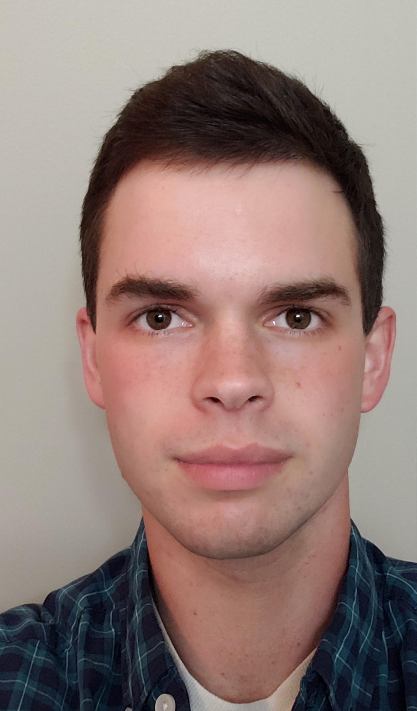

|
Morgan Byrd I am a third year CS PhD student at the Georgia Institute of Technology under Sehoon Ha. My interests are in robotics and reinforcement learning. |
 |
{kind=link}
Research |
|
AdaptManip: Learning Adaptive Whole-Body Object Lifting and Delivery with Online Recurrent State Estimation
Morgan Byrd, Donghoon Baek, Kartik Garg, Hyunyoung Jung, Daesol Cho, Maks Sorokin, Robert Wright, Sehoon Ha Under Review Website |
|
Unsupervised Skill Discovery as Exploration for Learning Agile Locomotion
Seungeun Rho*, Kartik Garg*, Morgan Byrd, Sehoon Ha Conference on Robot Learning (CoRL 2025) Website |
|
PrivilegedDreamer: Explicit Imagination of Privileged Information for Rapid Adaptation of Learned Policies
Morgan Byrd, Jackson Crandell, Mili Das, Jessica Inman, Robert Wright, Sehoon Ha IEEE International Conference on Robotics and Automation (ICRA 2025) (38.67% acceptance rate) Website |
|
Understanding Expectations for a Robotic Guide Dog for Visually Impaired People
J. T. Kim, Morgan Byrd, Jack L. Crandell, Bruce N. Walker, Greg Turk, Sehoon Ha ACM/IEEE International Conference on Human-Robot Interaction (HRI 2025) (25.0% acceptance rate) Website |
Work Experience
|
Education
|